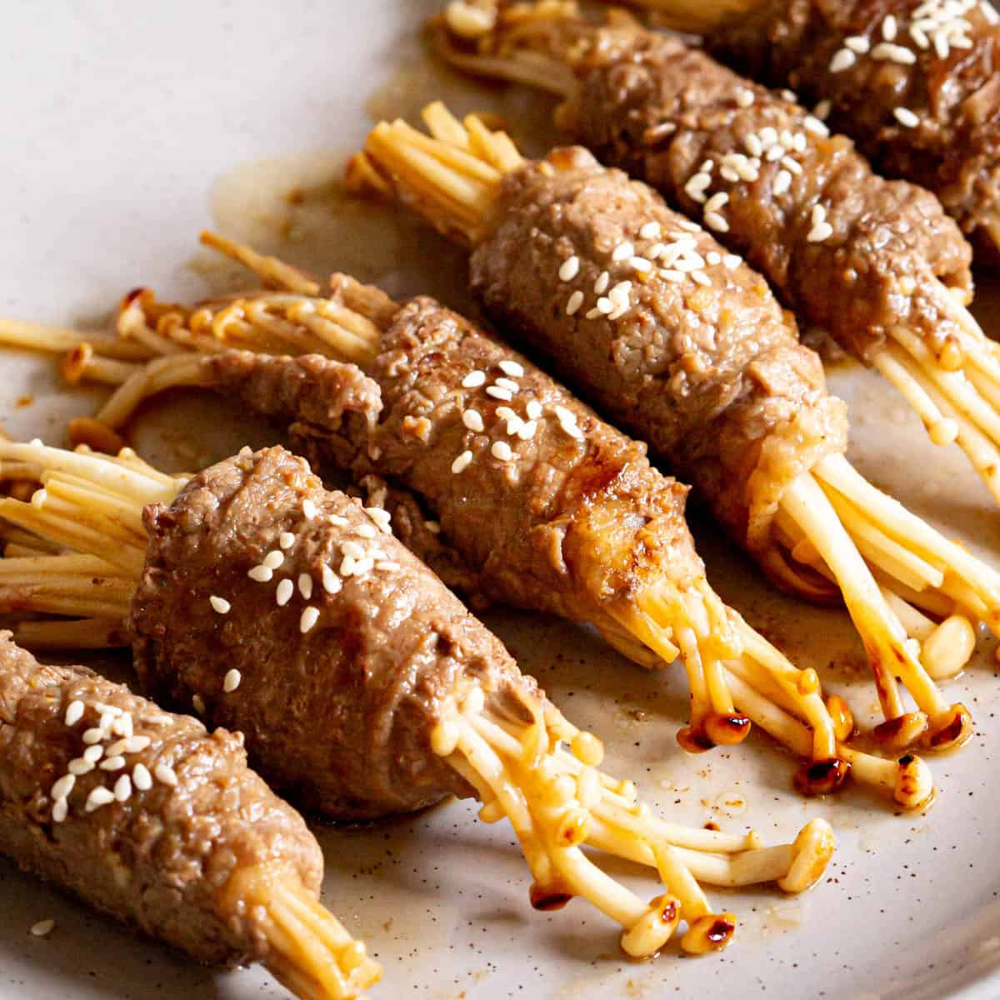

Home
Enoki Beef Rolls Recipe
Credit: Wandercooks

Description
Small enoki mushroom bindles wrapped in thinly sliced marinated beef.
Perfect to eat with rice or as a side dish. The recipe can be modified
to your preference; add a little spice, add an egg for more protein,
or just eat it with plainly seasoned beef.
Ingredients
- 1 tsp garlic finely chopped
- 1 tsp ginger finely chopped
- 2 tbsp soy sauce
- 1 tbsp cooking sake
- 1 tbsp mirin
- 2 tbsp sesame oil divided into 2 portions
- 400g thinly sliced beef
- 200g enoki mushrooms
- pinch of sea salt
Steps
-
Combine the garlic, ginger, soy sauce, sake, and mirin along with 1 tbsp
sesame oil in a shallow dish.
-
Place beef slices into dish and coat evenly in the marinade. Place in
fridge for a minimum of 30 minutes to allow all the flavors to soak into
the meat.
-
Meanwhile, slice the roots off of the enoki, leaving enough at the bottom
so the mushrooms are still stuck together. Break into small sections and
place into a bowl of lukewarm water. Sprinkle with a generous pinch of salt
and let sit for 10-15 minutes to add flavour. Then drain.
-
On a clean surface, stretch out one slice of beef. Top with two sections of
enoki facing opposite directions. Roll the beef tightly around the enoki on
a slight diagonal, so it's wrapped evenly. Repeat for remaining slices of beef.
-
Heat the remaining 1 tbsp sesame oil in a pan over medium high heat. Add the rolls
and cook quickly, rotating every few minutes until browned.
-
Once cooked, remove from pan and transfer to a serving plate. Pour any remaining
sauce from pan over the top and serve immediately.